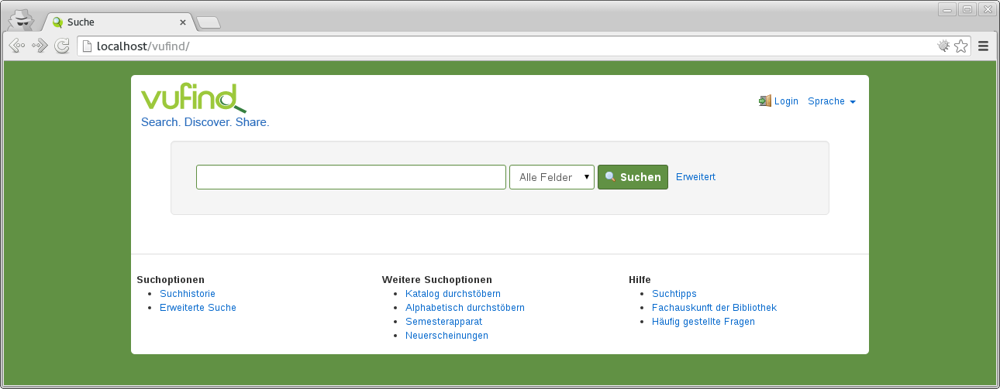
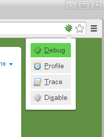

eine Vorstellung der Container-Virtualisierung
Docker
und ihr Einsatz in der Entwicklung von VuFind(2)
von Ulf Seltmann <seltmann@ub.uni-leipzig.de>
Projekt finc
Universitätsbibliothek Leipzig
Über mich
- 2000 bis 2007 Administrator im Web-/Linux-Umfeld
- 2007 Programmierer für PHP im Bereich e-Commerce
- seit April 2013 Programmierer in der UB Leipzig,
erst im Projekt finc, jetzt als Webmaster
Über Docker
- erste Version im März 2013 von dotCloud veröffentlicht
- 2014 Aufnahme in die kommerzielle Distribution Red Hat Enterprise Linux und openSUSE
- seit Version 1.0 offizielle Zuteilung der Ports 2375 und 2376 für HTTP/HTTPS-Kommunikation
Was ist Docker
- Containervirtualisierung für linuxuide Betriebssysteme
- Resourcen werden per kernel namespaces, cgroups, chroot und selinux vom Host-System isoliert
- wird als "chroot-Umgebung auf Speed" bezeichnet
Images
- leitet ab von Basis-Image
Dockerfilebeschreibt die zusätzliche Installation/Konfiguration- Images sind unveränderlich, Änderungen bauen aufeinander auf
- Images werden ver-/ge-teilt über öffentliches oder privates Repository
Container
- basieren auf einem Image
- startet mit dem Start eines Programms und beendet mit dessen Beendigung
- können Volumes des Hostsystems oder anderer Container einbinden
- können Ports an das Hostsystem oder andere Container forwarden
Hello World!
#$ docker run --name hello-world ubuntu echo "Hello World!"Unable to find image 'ubuntu:latest' locally
Pulling repository ubuntu
91e54dfb1179: Download complete
d3a1f33e8a5a: Download complete
c22013c84729: Download complete
d74508fb6632: Download complete
Status: Downloaded newer image for ubuntu:latest
Hello World!
#$
- run-Kommando legt die Container-Konfiguration fest
Hello World! (Again)
#$ docker start -ai hello-worldHello World!
#$
- erneute Container-Starts führen den Container mit der Konfiguration aus, die mit dem run-Kommando festgelegt wurde
Docker installieren/aktivieren/starten
sudo dnf|yum|apt-get install docker(.io)sudo systemctl enable dockersudo systemctl start dockerDas VuFind2-Image

- öffentliches Image in offizieller Docker-Registry
- als Entwicklungstestumgebung gedacht
- bestehend aus Debian Wheezy, Apache2, PHP 5.4, MySQL 5.6, OpenJDK 1.8
VuFind-Sourcen klonen
#$ git clone https://github.com/vufind-org/vufind.gitKlone nach 'vufind'...
remote: Counting objects: 106741, done.
remote: Compressing objects: 100% (20/20), done.
remote: Total 106741 (delta 6), reused 0 (delta 0), pack-reused 106720
Empfange Objekte: 100% (106741/106741), 388.15 MiB | 3.83 MiB/s, Fertig.
Löse Unterschiede auf: 100% (69166/69166), Fertig.
Prüfe Konnektivität... Fertig.
VuFind-Container starten
#$ sudo docker run --rm -ti \
-v $(pwd)/vufind:/app \
-p 80:80 -p 443:443 -p 8080:8080 -p 3306:3306 \
useltmann/vufind2
Unable to find image 'useltmann/vufind2:latest' locally
Pulling repository useltmann/vufind2
dbce69cc9264: Download complete
4c8cbfd2973e: Download complete
...
138278fd23d3: Download complete
Status: Downloaded newer image for useltmann/vufind2:latest
Setting up owner/group of dev...
Setting up runtime environment...
Setting up 10-mysqld...
...
Container aufrufen
http://localhost/vufind/
Die Image-Tools
PHP-Einstellungen mit PHPInfo
http://localhost/phpinfo/
Debugging mit XDebug
Profiling mit XDebug und webgrind


http://localhost/webgrind/
OPCode- und Variable Cache mit XCache

http://localhost/xcache/
Build-Sourcen auf GitHub
https://github.com/finc/docker-vufind2/

- nichts ist fehlerfrei
- Probleme werden behoben
- Features werden hinzugefügt
- Pull requests are welcome